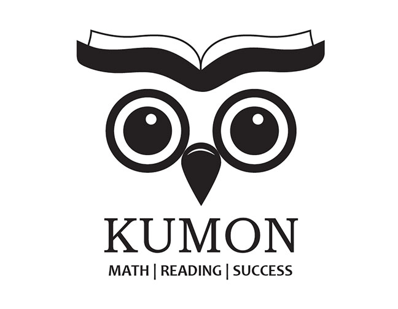
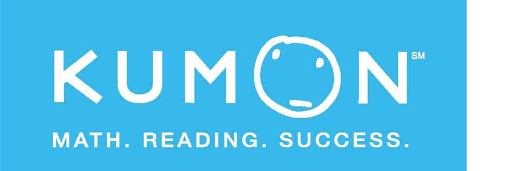
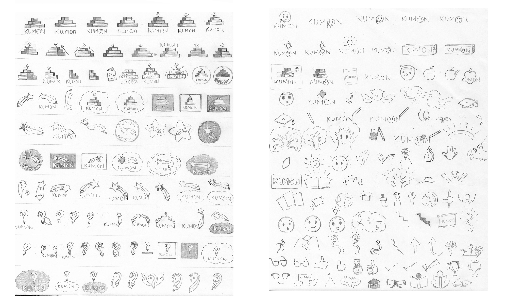
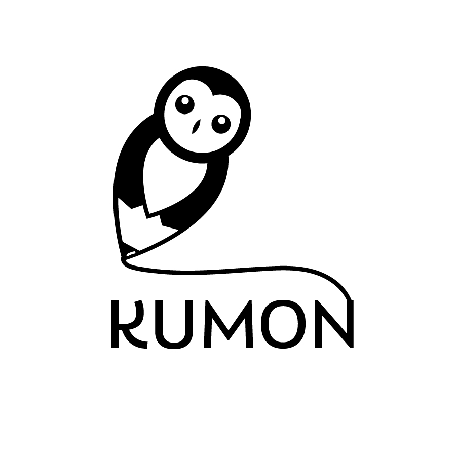
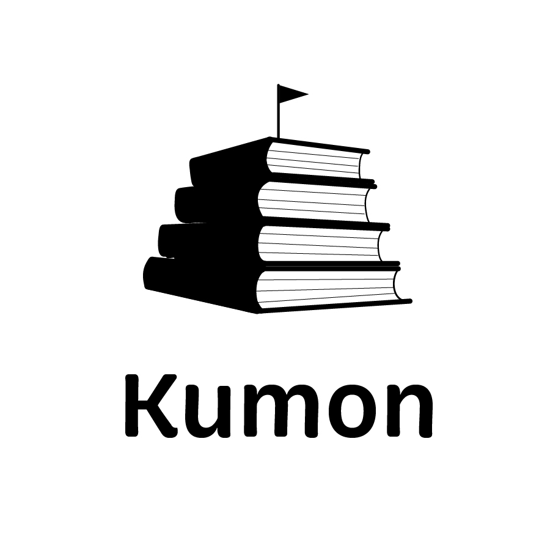
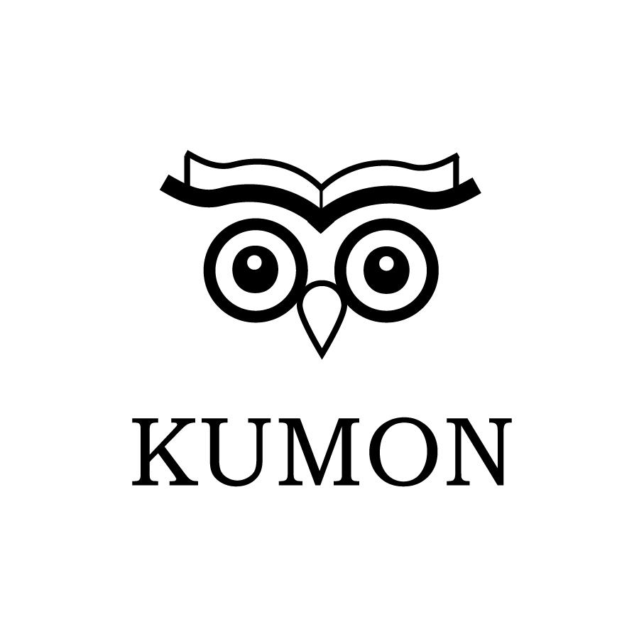

Kumon


OBJECTIVE
Re-design an existing logo for a corporation/business.
RESULTS
Kumon is a learning center that tutors children in english, math, and science. In re-designing the logo, I wanted to focus on implementing Kumon's mission-to encourage students to learn and grow.
ORIGINAL LOGO

The original Kumon logo features what the company calls the thinking face
.
However, I consider the face to look more sad than thinking. For this reason, my main goal
in designing the logo was to portray Kumon in a more positive, friendly light.
SKETCHES
I began trying to think of ideas for the logo.
Some of the main themes I considered were learning, fun, success, and friendly.
CONCEPT IDEAS


